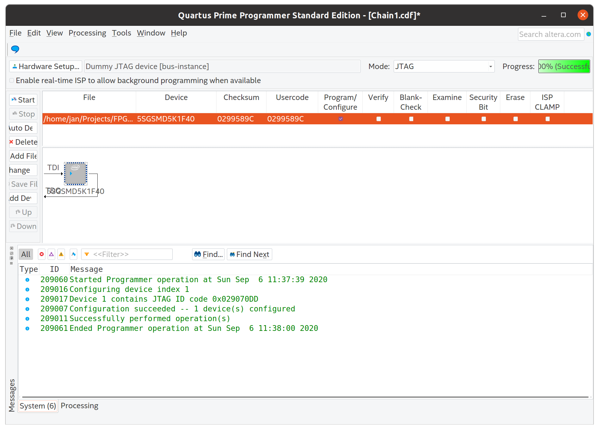
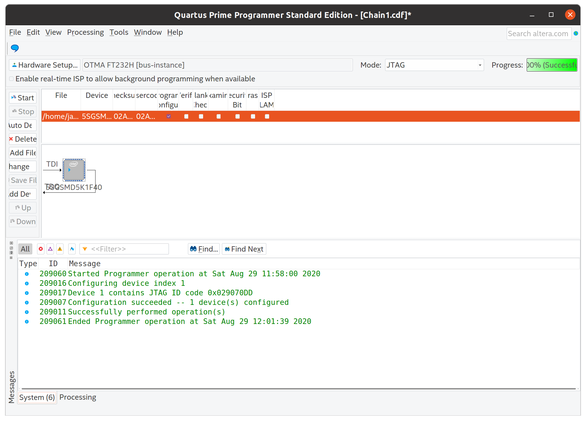
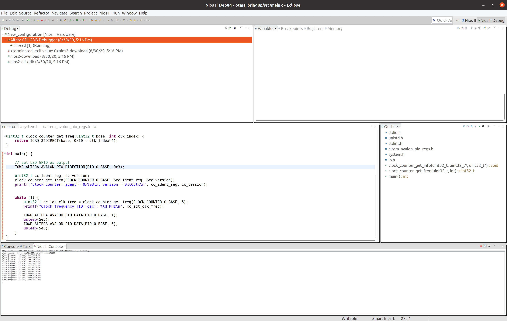
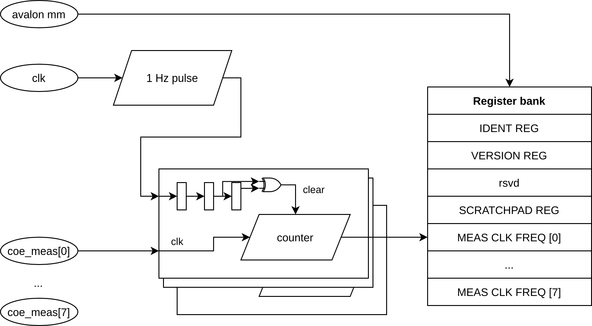

- on Sun 06 September 2020
As mentioned in my previous blog post, the next step would be to get the JTAG running in Quaruts. In this blog post I describe how I managed to develop a library as an interface between the FPGA board and Quartus, and demonstrate the developed interface to download the bitstream and to debug the Nios II soft-core processor.
Introduction
HW overview
The Stratix V board contains a 4-pin USB port (with a non-standard connector), to which an FT232H is attached, containing Multi-Protocol Synchronous Serial Engine (MPSSE) which can be used to implement the JTAG protocol.
I am a little bit surprised that the board includes the full JTAG programmer and not only the 10-pin JTAG header, which can be then used by the developers on their development setups. On the other hand, the cost of an FT232H is 2.70 EUR on Mouser for a reel, which is negligible compared to the cost of the board. I can also understand that having a JTAG debugger available on each board is valuable when monitoring the operating conditions (e.g. transceiver link quality with the EyeQ) and to debug and investigate the synchronization issues between the servers in the deployment.
I was not able to find more information about this particular USB/JTAG connection on the Open Compute Project website.
Quartus software suite
Intel® Quartus® provides several programs that are extremely useful for development for Intel/Altera FPGAs.
- Quartus Programmer which, as the name suggests, allows programming/configuring the FPGA devices over the JTAG chain, and it can also program the non-volatile memories attached to the FPGAs.
- System Console provides "visibility into your system" - one can use JTAG to Avalon MM bridge to read and write the registers in the IPs, and Transceiver Toolkit and External Memory Interface Toolkits both greatly simplify the bringup and debug of transceivers and external memories
- SignalTap is an embedded logic analyzer, useful for debugging the logic in hardware, with the input from real devices
- Nios II Debugger provides access to soft-core Nios II processor, and it can be used to download the programs, to debug them through GDB, and to obtain the output from the program over the JTAG UART IP
To my knowledge OpenOCD does not provide all these features and Quartus also does not seem to be able to interface to OpenOCD.
OpenOCD
Nonetheless, OpenOCD can be used to scan the JTAG chain, and confirm that the FTDI really is connected to the JTAG port of the FPGA:
$ openocd -f interface/ftdi/um232h.cfg -c "adapter_khz 100; transport select jtag; jtag newtap auto0 tap -irlen 10 -expected-id 0x029070dd";
Open On-Chip Debugger 0.10.0
Licensed under GNU GPL v2
For bug reports, read
http://openocd.org/doc/doxygen/bugs.html
adapter speed: 100 kHz
Info : clock speed 100 kHz
Info : JTAG tap: auto0.tap tap/device found: 0x029070dd (mfg: 0x06e (Altera), part: 0x2907, ver: 0x0)
Warn : gdb services need one or more targets defined
This gives hope that at least on the HW side, integrating the board with Quartus will be easy.
JTAG library
Some information on how to add a custom cable can be found on Intel
forums.
At the startup, Quartus scans the linux64 folder (if running on 64-bit Linux)
and searches for the shared object files which start with the libjtag_hw. The
shared object is then loaded, and a function called get_supported_hardware is
called. This function returns a structure, containing function pointers for
various operations that the programmer and other utilities can perform.
To understand this (undocumented) interface a little bit better, I first
implemented a library with a dummy JTAG TAP
controller.
This library can be copied or linked in the linux64 folder, and then used in
Quartus Programmer. The implementation of the JTAG pretends that it is a Stratix
V device (by having the same IDCODE) and then discards all the bits which are
downloaded to the device. If somebody has too much time, one can easily extend
this to create a very complicated .sof to .rbf converter. Finally, the
dummy device fakes the status register to communicate that the CONF_DONE is
high at the end of the programming. For debugging purposes, the library prints
extensive debug information over a UNIX socket.

Once this part in place, it is easy to imagine that combining the library of the dummy JTAG and the HW-related part of the OpenOCD is not so complicated. Since the OpenOCD is licensed under GPL v2, I have decided to re-use the code for MPSSE and FT232H and to also license my library under the same license.
Downloading the bitstream
Here is the documentation of the first victory in this convoluted JTAG bring-up process, the bitstream is successfully downloaded into the FPGA, and an LED on the board is blinking, indicating a total success.

JTAG to Avalon
To check if all functions of the JTAG cable are working, I have prepared a small IP (discussed below) and connected it to JTAG to Avalon Master Bridge. This IP provides access to the Avalon interconnect over System Console.
Shown here is a read of 12 words from a certain address in the Avalon MM memory space:
% set jtag_master [lindex [get_service_paths master] 0]
/devices/5SGSMD5H(1|2|3)|5SGSMD5K1|..@1#bus-instance#OTMA FT232H/(link)/JTAG/(110:132 v1 #0)/phy_0/master
% open_service master $jtag_master
% master_read_32 $jtag_master 0x1000 12
0xc10cc272 0x00010000 0x00000000 0x00000000 0x00000000 0x00000000 0x00000000 0x00000000 0x00000000 0x266ac4b1 0x00000000 0x00000000
% master_read_32 $jtag_master 0x1000 12
0xc10cc272 0x00010000 0x00000000 0x00000000 0x00000000 0x00000000 0x00000000 0x00000000 0x00000000 0x266ac4ac 0x00000000 0x00000000
% master_read_32 $jtag_master 0x1000 12
0xc10cc272 0x00010000 0x00000000 0x00000000 0x00000000 0x00000000 0x00000000 0x00000000 0x00000000 0x266ac4a8 0x00000000 0x00000000
% master_read_32 $jtag_master 0x1000 12
0xc10cc272 0x00010000 0x00000000 0x00000000 0x00000000 0x00000000 0x00000000 0x00000000 0x00000000 0x266ac4a3 0x00000000 0x00000000
I will explain later what exactly are we seeing here, for now let's just accept
that JTAG to Avalon bridge works, and it reads a magic number register
(0xc10cc272), a version register (0x00010000), and the meas_clk[5] register
reports a value between 644531368 Hz and 644531377 Hz.
Nios II
For a final test, I wanted to see if I can download a program into the Nios II instruction memory, run the program and observe the output over the JTAG UART interface.
Also here there were no obstacles with the home-made JTAG driver, and I could successfully perform all tasks necessary to download and debug the Nios II core, as also presented on the screenshot below.

Clock
The board contains an IDT8N4Q001 programmable clock oscillator, which is most likely used to generate the clocks needed for 40 Gigabit Ethernet (e.g. 156.25 MHz) and maybe for other communication protocols on the QSFP slots. Since none of the currently available resources (wirebond/catapult_v2_pikes_peak and Microsoft's Catapult v2 (Pikes Peak)) mentions where the IDT is connected to FPGA, I had to find out this myself.
The oscillator on my board has a code 2059, which according to the document
from
IDT
produces 644.53125 MHz for all values of FSEL in the default configuration.
This matches the previously measured frequency at the input CLK_R_REFCLK5
(pins T7 and T6).
Clock counter
I have written a small IP to measure the frequency of several clocks from a known clock frequency. As a known frequency I have used the 125 MHz on-board oscillator.

The clock-counter IP generates a strobe signal with a frequency of 0.5 Hz (i.e. pulse width of 1 s). Each of the measured clocks counts with an independent counter. When a transition of the strobe signal is detected, the counter value is stored in a register (accessible on Avalon MM interface) and the counter value is reset to 0. The counter then continuos counting, until the next transition is detected and the same procedure is repeated.
Since the counter is active for exactly a second (within a certain ppm range) before it gets stored in a register, the value stored in the register is the frequency of the measured clock, in Hertz.
The clock-domain crossing for the registers is non-existent, the registers are loaded from one clock (from the measured clock) and read from the Avalon interface clocks. Since the register is updated only once per second (and thus the possibility that we read during an update is quite low) and since this is only used for diagnostics, not implementing a proper CDC can be tolerated.
IDT driver
I prepared a driver for the IDT oscillator, which provides:
- a function to decode the bytes into a proper structure (can be used to inspect the current configuration),
- a function to encode the structure in bytes (can be used to generate the bytes to be written into the device),
- a function to configure all relevant fields (per channel) to obtain the desired frequency
and some other functions.
The main program configures 4 different frequencies, selects one of the four, and then goes into a loop where it prints the measured frequency once per second.
Here is the output of the program:
Clock counter: ident = Oxcl0cc272, version = 0x00010000
IDT8NXQOO1 config:
MINT : 25 25 24 25
MFRAC : 000000 000000 000000 00000
N : 20 16 12 08
P : 00 00 00 00
DSM_ENA : 0 0 0 0
LF : 1 1 1 1
CP : 3 3 3 3
FSEL : 1
nPLL_BYP : 1
ADC_ENA : 0
Finished configuring IDT oscillator, entering while(1) loop...
Clock frequency [IDT osc]: 6250002 MHz
Clock frequency [IDT osc]: 103430663 MHz
Clock frequency [IDT osc]: 156250082 MHz
Clock frequency [IDT osc]: 156250082 MHz
Clock frequency [IDT osc]: 156250085 MHz
Clock frequency [IDT osc]: 156250086 MHz
Clock frequency [IDT osc]: 156250086 MHz
Clock frequency [IDT osc]: 156250085 MHz
Clock frequency [IDT osc]: 156250086 MHz
Clock frequency [IDT osc]: 156250084 MHz
Clock frequency [IDT osc]: 156250083 MHz
Clock frequency [IDT osc]: 156250082 MHz
Clock frequency [IDT osc]: 156250082 MHz
Clock frequency [IDT osc]: 156250082 MHz
Clock frequency [IDT osc]: 156250081 MHz
Clock frequency [IDT osc]: 156250084 MHz
[...]
We see that after the measurement has stabilized, we are receiving the clock which we have configured, and we see that both the reference clock (125 MHz to generate the strobe signal) and the measured clock have a low wander and a low offset.
Conclusion and future plans
I have managed to prepare a setup that will allow me to develop and debug the Stratix V FPGA directly from Quartus. I am satisfied that I could develop a software solution and use the on-board FTDI chip, and I did not have to solder wires for the JTAG to the board.
With the access to useful tools in Quartus (e.g. SignalTap, Console, Nios II debugger, Transceiver toolkit, ...) I believe bringing up the rest of the board will be much easier.
Finally, to validate that the library for the JTAG cable runs reliably, I have used it to develop a small program that can configure the on-board oscillator to a desired frequency, in my case 156.25 MHz. I plan to use this for a test of the transceivers connected to the QSFP slots.
All trademarks and registered trademarks are the property of their respective owners.